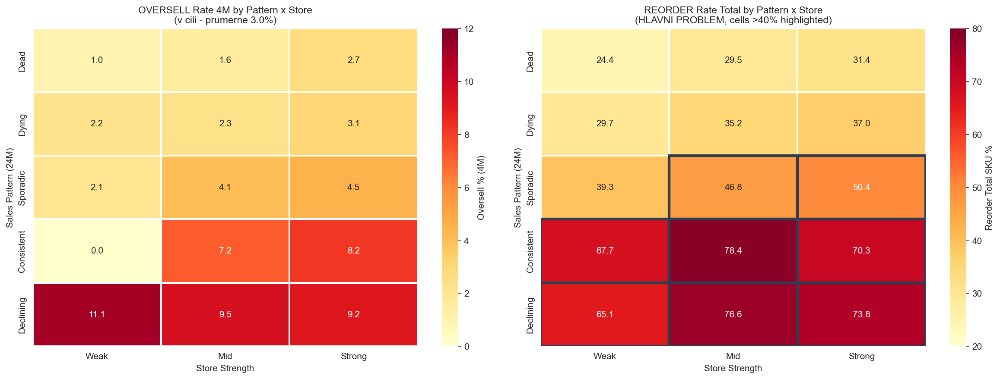
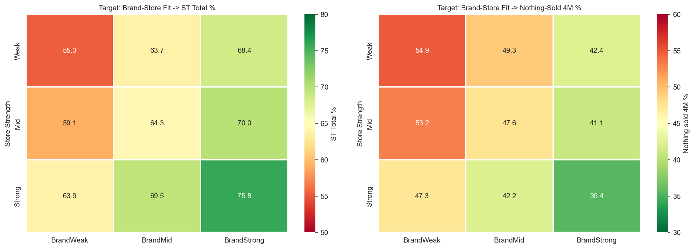
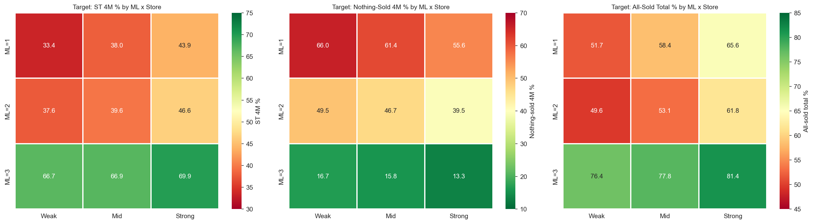
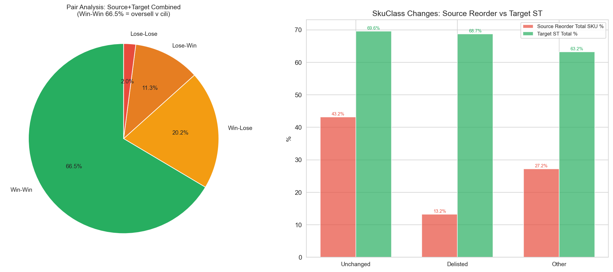
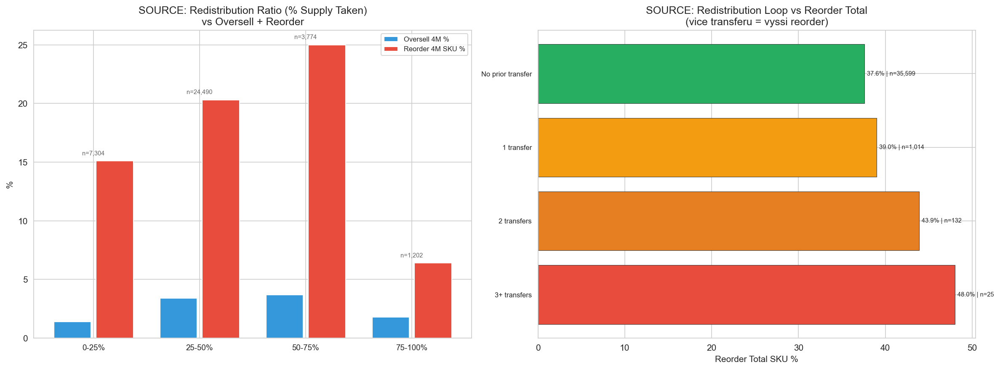
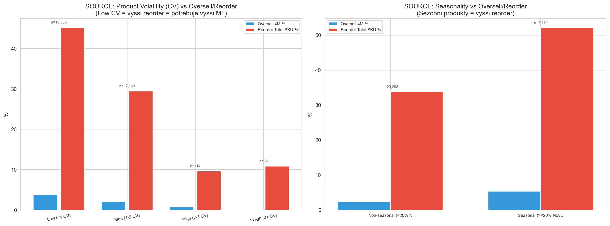

Consolidated Findings v4: SalesBased MinLayers (ML 0-4)
CalculationId=233 | ApplicationDate: 2025-07-13 | Generated: 2026-03-22 15:28
v4 KEY CHANGE: ML rozsah 0-4 (misto 0-5). Objednatelne SKU (A-O, Z-O) maji minimum ML=1 - NIKDY ML=0.
Pouze non-orderable/delisted SKU mohou mit ML=0. OPRAVENY VZOREC OVERSELL - oversell je nyni v cili, reorder je hlavni problem.
Oversell v cili (3.0%). Reorder je hlavni problem (37.6%).
S opravenym vzorcem oversell je oversell 4M pouze 3.0% (1,317 SKU, 1,464 qty) - to je v akceptovatelnem rozsahu.
Hlavni problem je reorder: 37.6% SKU (13,841) musi byt v total perioade znovu objednano, coz znamena 16,615 kusu (34.1% objemu).
Rozhodovaci strom je optimalizovan na redukci reorderu.
ORDERABLE CONSTRAINT (v4): A-O (SkuClass=9) a Z-O (SkuClass=11) objednatelne SKU maji vzdy minimum ML=1.
Pouze 380 non-orderable SKU (1.0%) mohou mit ML=0. 95.4% vsech SKU je orderable, proto vsechny Dead/Dying segmenty
zacinaji na ML=1 (ne ML=0 jako v3).
1. Overview
42,404
Redistribution pairs
48,754
Total redistributed pcs
Source: Celkove metriky - 4M a total
| Metric | 4 months | Total (~9M) |
|---|
| Total redistributed | 48,754 pcs | 48,754 pcs |
| Oversell (SKU) | 1,317 SKU (3.6%) | 4,718 SKU (12.8%) |
| Oversell (qty) | 1,464 qty (3.0%) | 5,578 qty (11.4%) |
| Reorder (SKU) | 7,087 SKU (19.3%) | 13,841 SKU (37.6%) |
| Reorder (qty) | 7,980 qty (16.4%) | 16,615 qty (34.1%) |
Oversell v cili (3.0%). Reorder je hlavni problem (37.6%).
Target: Celkove metriky - 4M a total
ST = LEAST(Sold, Base) / Base (cap 100%)
ST-1pc (ST1) = sell-through s toleranci 1 kusu = IDEAL pokud zbyva presne 1 ks.
2. Source: Predejni vzorce (24M) - primarni prediktor
24-mesicni historie prodejov odhalila 5 vzorov, ktere silne predikuji riziko reorderu po redistribuci.
v4 (opraveno): Oversell je v cili (3.0%), primarni metrikou je nyni reorder_tot_sku.
2.1 Vsech 15 segmentu: Pattern x Store

| Pattern | Store | SKU | Oversell 4M % | Oversell Total % |
Reorder Total SKU % | Redist qty | Recommendation |
|---|
| Dead | Weak | 4,557 | 1.0% | 4.6% | 24.4% | 5,418 | CAN LOWER ML |
| Dead | Mid | 6,884 | 1.6% | 6.9% | 29.5% | 8,533 | CAN LOWER ML |
| Dead | Strong | 4,012 | 2.7% | 9.4% | 31.4% | 5,086 | OK |
| Dying | Weak | 1,634 | 2.2% | 6.9% | 29.7% | 1,976 | CAN LOWER ML |
| Dying | Mid | 2,965 | 2.3% | 8.8% | 35.2% | 3,605 | OK |
| Dying | Strong | 2,000 | 3.1% | 11.1% | 37.0% | 2,430 | OK |
| Sporadic | Weak | 2,559 | 2.1% | 10.0% | 39.3% | 3,389 | OK |
| Sporadic | Mid | 5,606 | 4.1% | 14.4% | 46.8% | 7,848 | OK |
| Sporadic | Strong | 5,480 | 4.5% | 17.9% | 50.4% | 8,347 | MUST RAISE ML |
| Consistent | Weak | 31 | 0.0% | 21.0% | 67.7% | 62 | MUST RAISE ML |
| Consistent | Mid | 162 | 7.2% | 23.0% | 78.4% | 404 | MUST RAISE ML |
| Consistent | Strong | 516 | 8.2% | 26.8% | 70.3% | 1,159 | MUST RAISE ML |
| Declining | Weak | 63 | 11.1% | 41.1% | 65.1% | 90 | MUST RAISE ML |
| Declining | Mid | 141 | 9.5% | 31.7% | 76.6% | 189 | MUST RAISE ML |
| Declining | Strong | 160 | 9.2% | 27.1% | 73.8% | 218 | MUST RAISE ML |
| TOTAL | 36,770 |
- | - | 48,754 | - |
MUST RAISE ML (reorder_tot_sku >50%): Sporadic+Strong (50.4%), Consistent+Weak (67.7%), Consistent+Mid (78.4%),
Consistent+Strong (70.3%), Declining+Weak (65.1%), Declining+Mid (76.6%), Declining+Strong (73.8%).
Oversell je v cili: Maximalni oversell 4M je 11.1% (Declining+Weak, ale jen 63 SKU). Prumerny oversell 4M = 3.0%.
S opravenym vzorcem jsou vsechny segmenty pod 12% oversell 4M.
3. Source + Target: Sila predajni (decily)

| Metric | D1 (Weak) | D10 (Strong) | Trend |
|---|
| Source Oversell 4M | 1.9% | 4.5% | Oversell je v cili ve vsech decilech |
| Source Reorder Total | 24.0% | 38.6% | Silne predajne = vyssi reorder riziko |
| Target All-Sold Total | 48.3% | 70.1% | Silne predajne prodaji vse |
| Target Nothing-Sold | 32.1% | 13.7% | Slabe predajny = vice zaseklych zbozi |
4. Target: Sell-through analyza (15 segmentu)
4.1 Store Strength x Sales Bucket

| SalesBucket | Store | SKU | ST 4M % | ST Total % | ST1 Total % |
Nothing-sold 4M % | All-sold Total % |
|---|
| 0 | Weak | 137 | 23.1% | 34.7% | 16.1% | 73.7% | 31.4% |
| 0 | Mid | 334 | 23.4% | 41.5% | 22.4% | 73.7% | 37.7% |
| 0 | Strong | 252 | 36.4% | 53.6% | 22.2% | 61.1% | 51.6% |
| 1-2 | Weak | 1,966 | 26.3% | 47.2% | 59.5% | 65.5% | 38.0% |
| 1-2 | Mid | 4,493 | 28.6% | 51.2% | 63.7% | 62.0% | 40.9% |
| 1-2 | Strong | 3,622 | 32.1% | 56.4% | 68.1% | 58.0% | 47.0% |
| 3-5 | Weak | 2,601 | 41.5% | 65.8% | 76.7% | 45.1% | 54.4% |
| 3-5 | Mid | 7,765 | 40.8% | 66.0% | 77.1% | 45.5% | 54.6% |
| 3-5 | Strong | 9,017 | 45.3% | 71.7% | 82.1% | 40.8% | 61.0% |
| 6-10 | Weak | 886 | 58.6% | 82.2% | 87.5% | 28.1% | 74.3% |
| 6-10 | Mid | 3,347 | 59.3% | 84.3% | 90.6% | 26.8% | 76.2% |
| 6-10 | Strong | 4,859 | 63.1% | 86.2% | 92.3% | 22.3% | 78.8% |
| 11+ | Weak | 179 | 73.8% | 92.0% | 95.5% | 12.3% | 84.9% |
| 11+ | Mid | 815 | 72.7% | 93.4% | 95.7% | 11.9% | 87.9% |
| 11+ | Strong | 1,358 | 77.0% | 93.9% | 96.4% | 10.8% | 89.5% |
11+ sales bucket = vyborny target: 84.9-89.5% all-sold, nothing-sold jen 10.8-12.3%.
ST1 total 95.5-96.4% = prakticky vsechno se proda nebo zustane presne 1 ks.
4.2 Brand-Store Fit

| Store | BrandFit | SKU | ST Total % | Nothing-sold 4M % |
|---|
| Weak | BrandWeak | 2,448 | 55.3% | 54.9% |
| Weak | BrandMid | 1,152 | 63.7% | 49.3% |
| Weak | BrandStrong | 2,169 | 68.4% | 42.4% |
| Mid | BrandWeak | 3,623 | 59.1% | 53.2% |
| Mid | BrandMid | 3,744 | 64.3% | 47.6% |
| Mid | BrandStrong | 9,387 | 70.0% | 41.1% |
| Strong | BrandWeak | 1,746 | 63.9% | 47.3% |
| Strong | BrandMid | 2,590 | 69.5% | 42.2% |
| Strong | BrandStrong | 14,772 | 75.8% | 35.4% |
BrandWeak + StoreWeak = nejhorsi kombinace: ST total jen 55.3%, nothing-sold 54.9%.
Naopak BrandStrong + StoreStrong: ST total 75.8%, nothing-sold jen 35.4%.
Rozdil: +20.5pp v ST, -19.5pp v nothing-sold.
5. Target: Vykon podle ML a sily predajny v4

| ML | Store | SKU | ST 4M % | ST1 4M % |
Nothing-sold 4M % | All-sold Total % |
|---|
| ML1 | Weak | 847 | 33.4% | 11.9% | 66.0% | 51.7% |
| ML1 | Mid | 2,095 | 38.0% | 13.4% | 61.4% | 58.4% |
| ML1 | Strong | 1,788 | 43.9% | 16.9% | 55.6% | 65.6% |
| ML2 | Weak | 4,418 | 37.6% | 49.9% | 49.5% | 49.6% |
| ML2 | Mid | 12,793 | 39.6% | 53.0% | 46.7% | 53.1% |
| ML2 | Strong | 14,766 | 46.6% | 60.1% | 39.5% | 61.8% |
| ML3 | Weak | 504 | 66.7% | 74.2% | 16.7% | 76.4% |
| ML3 | Mid | 1,866 | 66.9% | 74.3% | 15.8% | 77.8% |
| ML3 | Strong | 2,554 | 69.9% | 77.3% | 13.3% | 81.4% |
ML=3 je jasne nejlepsi target: All-sold 76-81%, nothing-sold jen 13-17%.
ML=1 ma nejhorsi vykon (all-sold 52-66%, nothing-sold 56-66%).
ML=2 je stredni cesta s velkym objemem (31,977 SKU).
6. Parova analyza (Source + Target combined)

| Outcome | Description | Count | Share |
|---|
| Win-Win | No oversell + good ST | 28,179 | 66.5% |
| Win-Lose | No oversell + bad ST | 8,565 | 20.2% |
| Lose-Win | Oversell + good ST | 4,794 | 11.3% |
| Lose-Lose | Oversell + bad ST | 866 | 2.0% |
Win-Win = 66.5% (28,179 paru bez oversell a s dobrym ST) - to je vyborny vysledek.
Win-Lose (20.2%) = bez oversell, ale spatny ST na targetu - fokus na zlepseni target vyberu.
Lose-Win + Lose-Lose = pouze 13.3% celku.
7. Source: Dalsi faktory ovlivnujici reorder
7.1 Phantom Stock (source)
Phantom stock: s opravenym vzorcem oversell je minimalny. Pouze 1 potvrzene phantom stock SKU.
S korekci oversell vzorce prakticky zadne SKU nesplnuje kriteria phantom stocku.
Toto neni problem k reseni.
7.2 Redistribucni smycka
| Category | SKU | Oversell 4M % | Oversell Total % | Reorder Total SKU % | Reorder Total Qty % |
|---|
| No prior transfer | 35,599 | 3.0% | 11.4% | 37.6% | 34.1% |
| 1 transfer | 1,014 | 3.6% | 12.0% | 39.0% | 33.5% |
| 2 transfers | 132 | 2.3% | 8.7% | 43.9% | 40.2% |
| 3+ transfers | 25 | 1.3% | 7.9% | 48.0% | 34.2% |
3+ transfers = 48.0% reorder total!
Kazdy dalsi transfer zvysuje reorder riziko. 2+ transfers = silny signal pro +1 ML modifier.
Pozor: oversell je nizky (1.3-2.3%), ale reorder roste.
7.3 Redistribucni ratio (% supply odeslano)

| Ratio Bucket | SKU | Oversell 4M % | Oversell Total % | Reorder 4M SKU % | Reorder Total Qty % |
|---|
| 0-25% | 7,304 | 1.4% | 7.4% | 15.1% | 32.8% |
| 25-50% | 24,490 | 3.4% | 12.6% | 20.3% | 36.8% |
| 50-75% | 3,774 | 3.7% | 12.9% | 25.0% | 31.4% |
| 75-100% | 1,202 | 1.8% | 4.9% | 6.4% | 11.4% |
Reorder roste s ratio: 0-25% ratio = 15.1% reorder 4M, 50-75% = 25.0%.
Vyjimka: 75-100% ratio ma nizky reorder (6.4%) - kdyz se odeslalo skoro vse, neni co reorderovat.
Oversell je ve vsech bucketech nizky (1.4-3.7%).
7.4 Product Volatility (CV)

| Volatility | SKU | Oversell 4M % | Oversell Total % | Reorder Total SKU % | Reorder Total Qty % |
|---|
| Low (<1 CV) | 19,366 | 3.7% | 14.0% | 45.2% | 39.4% |
| Med (1-2 CV) | 17,163 | 2.1% | 8.1% | 29.4% | 27.3% |
| High (2-3 CV) | 114 | 0.7% | 2.0% | 9.6% | 7.4% |
| VHigh (3+ CV) | 65 | 0.0% | 1.5% | 10.8% | 10.3% |
Low CV (<1) = 45.2% reorder total! Stabilni produkty maji vyssi reorder, protoze se predikovatelne prodavaji a dochazi k nim.
High CV (3+) = jen 9.6-10.8% reorder. Nestabilni produkty = mene predvidatelne = mene reorderu.
Modifier: Low CV -> +1 ML.
7.5 Sezonnost (NovDec share)
| Category | SKU | Oversell 4M % | Oversell Total % | Reorder 4M SKU % | Reorder Total SKU % | Reorder Total Qty % |
|---|
| Non-seasonal (<20% NovDec) | 29,298 | 2.3% | 9.3% | 16.8% | 33.9% | 30.8% |
| Seasonal (>=20% NovDec) | 7,472 | 5.3% | 18.8% | 29.1% | 52.2% | 45.3% |
Sezonni produkty: 52.2% reorder total SKU vs 33.9% u non-seasonal.
Rozdil: +18.3pp. Silny modifier: ≥20% NovDec -> +1 ML.
Oversell je take vyssi (5.3% vs 2.3%), ale stale v akceptovatelnem rozsahu.
8. SkuClass prechody
8.1 Source
| Status | SKU | Oversell Total % | Reorder Total SKU % | Reorder Total Qty % |
|---|
| Unchanged | 29,322 | 13.0% | 43.2% | 39.8% |
| Delisted | 6,049 | 4.9% | 13.2% | 10.9% |
| Other | 1,385 | 10.1% | 27.2% | 26.3% |
8.2 Target
| Status | SKU | ST Total % |
|---|
| Unchanged | 33,395 | 69.6% |
| Delisted | 7,108 | 68.7% |
| Other | 1,128 | 63.2% |
Delisting override: Delisted source: reorder_tot_sku jen 13.2% (vyrazne nizsi nez unchanged 43.2%).
Delisted target: ST total 68.7% (temer stejne jako unchanged 69.6%).
Delisting -> ML=0 je bezpecne pravidlo. Oversell delisted je take nizky (4.9%).
9. Flow Matrix: odkud kam

| Source Store | Target Store | Pairs | % of Total |
|---|
| Weak | Weak | 1,179 | 2.8% |
| Weak | Mid | 4,149 | 9.8% |
| Weak | Strong | 4,611 | 10.9% |
| Mid | Weak | 2,391 | 5.6% |
| Mid | Mid | 7,279 | 17.2% |
| Mid | Strong | 8,304 | 19.6% |
| Strong | Weak | 2,302 | 5.4% |
| Strong | Mid | 5,643 | 13.3% |
| Strong | Strong | 6,546 | 15.4% |
Nejvic paru: Mid->Strong (19.6%) a Mid->Mid (17.2%).
Strong->Strong: 15.4%. Weak->Weak jen 2.8% (nejmensi tok).
Distribuce preferuje posilani do silnych predajni = spravny smer.
10. Souhrnna tabulka vsech faktoru
| Factor | Impact (reorder) | Impact (oversell) | Source ML | Target ML | Priority |
|---|
| Sales Pattern: Consistent/Declining | 65-78% reorder tot | 7-41% oversell tot | UP (ML=3-4) | - | 1 |
| Sales Pattern: Dead/Dying | 24-37% reorder tot | 1-11% oversell tot | ML=1 (orderable min) | - | 1 |
| Store Strength (source D10) | 38.6% reorder tot | 4.5% oversell 4M | UP for strong | - | 1 |
| Target: 11+ sales bucket | - | - | - | UP (ML=3) | 1 |
| Target: 0 sales + Weak | - | - | - | DOWN (ML=1) | 1 |
| Seasonality ≥20% NovDec | 52.2% reorder tot | 5.3% oversell 4M | +1 ML | - | 2 |
| Redist loop 2+ | 43.9-48.0% reorder tot | 1.3-2.3% oversell 4M | +1 ML | - | 2 |
| Low volatility (CV<1) | 45.2% reorder tot | 3.7% oversell 4M | +1 ML | - | 2 |
| Brand Weak+Weak | - | - | - | -1 ML | 2 |
| All-sold ≥70% | - | - | - | +1 ML | 2 |
| Delisting (D/L) | reorder 13.2% | oversell 4.9% | = 0 | = 0 | 1 |
Generated: 2026-03-22 15:28 | CalculationId=233 | v4 ML 0-4 | Orderable min=1 | Reorder focus